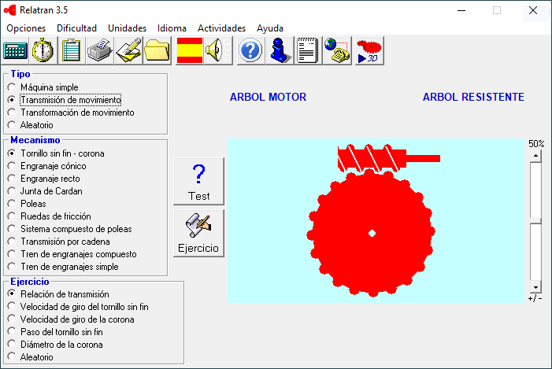

Recursos para Mecánica¶
PushMePullMe 2D¶
En la página web de Gennaro Senatore podemos encontrar esta herramienta que permite jugar a empujar y estirar diferentes estructuras. La aplicación muestra visualmente los esfuerzos internos de la estructura sometida a las fuerzas externas que aplicamos con el ratón sobre ella.
Catastrophe¶
En la página web de Gennaro Senatore podemos encontrar esta herramienta con la que comprobaremos cómo una estructura triangulada va perdiendo estabilidad a medida que retiramos barras, hasta que colapsa de forma catastrófica.
FreeCAD¶
FreeCAD es un programa de diseño asistido por ordenador en tres dimensiones (3D), para el diseño de piezas mecánicas. Existen versiones para Windows, Mac y Linux.
Relatran¶
Relatran es un programa que muestra una simulación de los mecanismos simples y de los distintos mecanismos de transmisión y transformación del movimiento. Incluye varios cuestionarios de todos los temas tratados. El autor es Jaume Dellunde y el programa tiene licencia Freeware.
